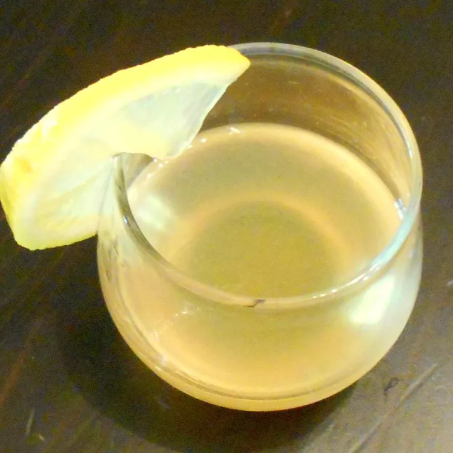

Sidecar

Description:
A descendant of the Brandy Crusta, the Sidecar is one of the most famous Cognac cocktails you can order. It is believed the Sidecar was invented around World War I, as it was featured in two cocktail books from the era. This cocktail features Cognac, orange liqueur, fresh lemon juice, and a sugared rim — the sugared rim is optional, but it adds a sweetness to the dry cocktail.
Ingredients:
- ice cubes
- ½ fluid ounce freshly squeezed lemon juice
- ½ fluid ounce Cointreau or triple sec
- 1 fluid ounce brandy
- 1 lemon wedge
Directions:
- Fill a cocktail shaker 3/4 full with ice cubes
- Pour in lemon juice, Cointreau, and brandy
- Cover and shake vigorously for about 30 seconds until the outside of the shaker becomes cold and frosty
- Strain into a martini glass and garnish with a wedge of lemon.